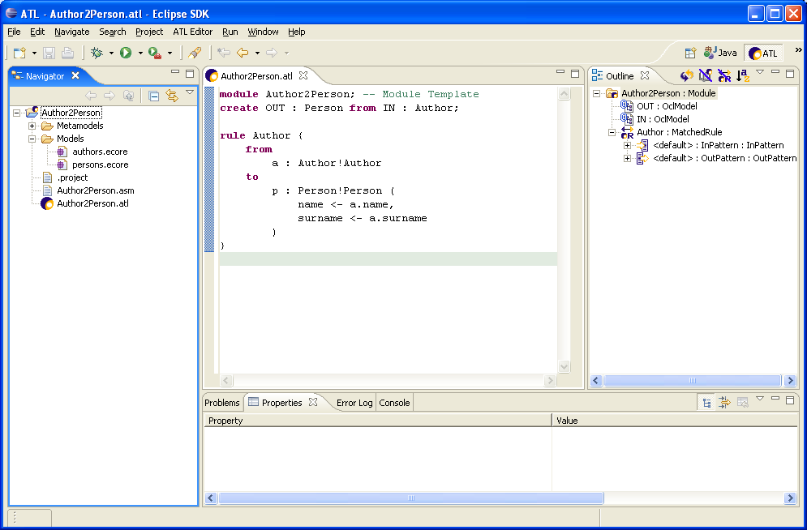
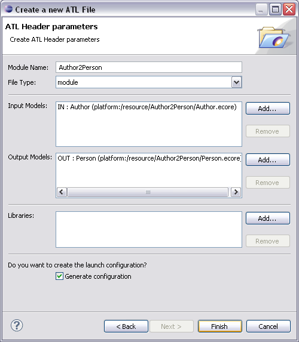
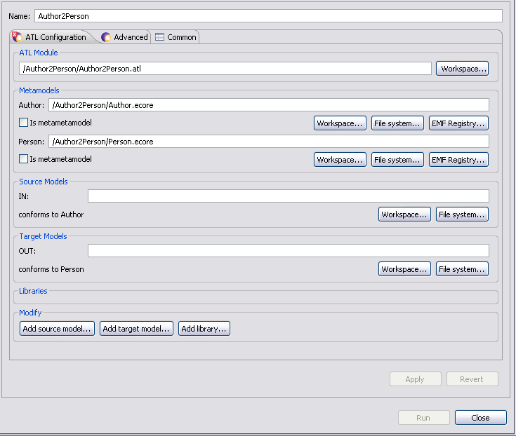
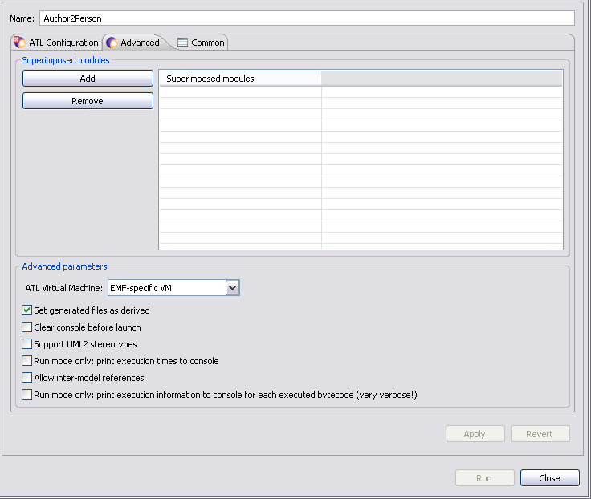
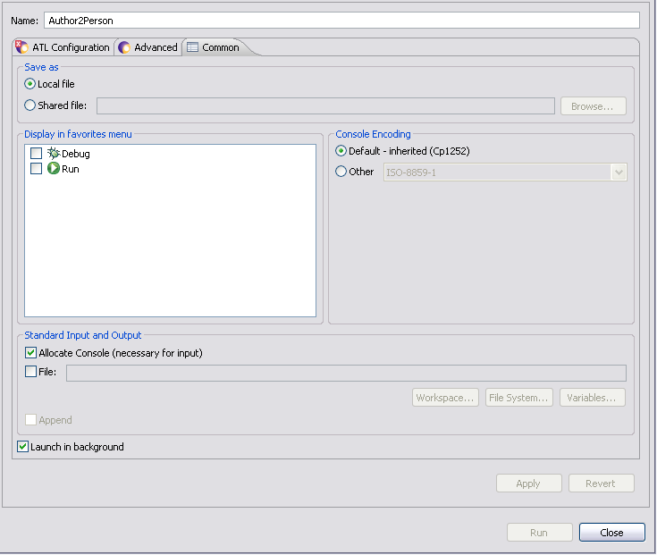
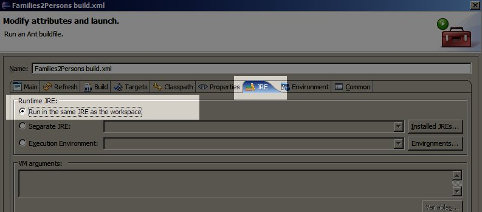
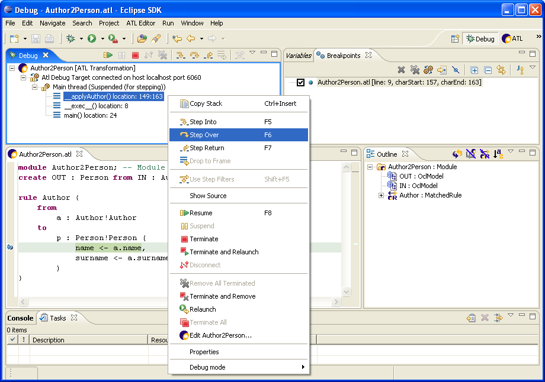

| The ATL Tools | ||
|---|---|---|
|
|
|
|
| The ATL Language | Updating This Document | |
This section provide a complete description of the ATL Tools, then aims to explain their usage.
In Eclipse, the notion of perspective refers to a workbench configuration that is arranged in order to optimise the handling of a certain task. A workbench is usually composed of several subwindows (called views) and toolkits. ATL is associated with of two specific perspectives: the main ATL perspective and the ATL Debug perspective, which are respectively dedicated to the design and the debugging of ATL transformations. Switching to the ATL, as well as to the other perspectives available on the Eclipse platform, can be achieved by either the perspective buttons available in the thumb index on the top right hand side of your workbench, or by selecting a perspective within the perspectives menu ( Menu bar->Window->Open perspective->Other...).
The ATL perspective is the main perspective for ATL development. It provides all the required features for the creation of ATL projects, ATL transformation files and ATL launch configurations. The perspective also includes a textual editor dedicated to ATL files. The ATL perspective is composed of seven different views: the Navigator, the Editors, the Outline, the Console, the Error Log, the Properties and the Problems views. Here is a screenshot of an ATL project under the ATL perspective.

In its default configuration, the ATL perspective displays the Navigator view on the left side of the window. The Editors view is situated in the top middle part of the windows, whereas the Outline view is positioned on the top left part of the perspective. Finally, the four remaining views (Problems, Properties, Error Log and Console) share the bottom part of the perspective. Note that it is possible to display a given view in the whole perspective by simply double-clicking onto the view title. Moving back to the original perspective configuration is achieved by double-clicking again onto the view title. The different views of the ATL perspective are detailed in the following subsections.
Besides browsing the content of the workbench, the Navigator view provides a number of contextual actions on the different contained element it contains. The list of contextual actions, which depends on the type of the selected element, is displayed in a contextual menu obtained by right-clicking on a given element.
Interesting contextual actions available in the Navigator view include:
Note that the content of the files opened from the Navigator view is displayed within the Editors view by means of the selected editor.
Eclipse facilitates the development of powerful source editors. Thus, besides the default editors provided by Eclipse and by the EMF framework, an ATL editor has been implemented in order to ease the typing of ATL transformations. This editor is the default editor for .atl files. It performs syntax highlighting, displays the position of defined breakpoints, but also performs runtime parsing, compilation and error detection. The problems that are detected at compile-time are underlined by the ATL Editor. Details about these problems are displayed in the Problems view. These details include the type of detected problem (Error, Warning or Style), a textual description of the problem and the positioning of this problem (line and column numbers) in the compiled file. Note that saving modifications of an ATL file that contains a syntactically correct ATL program triggers the compilation of this file, and thus the generation of a new ASM assembler file. An assembler file has the extension .asm and contains the compiled code of the corresponding ATL file.
Note that, when editing an ATL file by means of the ATL Editor, an outline of the ATL transformation is simultaneously displayed within the Outline view.
The Outline view aims to provide ATL developers with an overview of the structural elements of the file being edited in the Editors view. To this end, the Outline view has to be synchronized with the active tab of the Editors view.
In the scope of an ATL file, the Outline view displays the structure of the currently edited transformation. Adding, from the ATL Editor view, the code for a new structural element such as a rule or a helper operation will automatically lead to a corresponding addition in the Outline view (at latest when the file is saved). Furthermore, cursors of the ATL Editor and the Outline view always point to the same structural element, as illustrated in the following picture. As a consequence, if the cursor is moved in one of them (either the ATL Editor or the Outline), the other view will replace its own cursor correspondingly.
Details about the transformation element selected in the Outline view are displayed in the Properties view.
In the scope of an ATL transformation, the Outline view also enables to position new breakpoints in the transformation code. The definition of a new breakpoint is achieved, from a selected element of the Outline view, by selecting the Add breakpoint option of the contextual menu. The breakpoints defined within the Outline view will be listed in the Breakpoints view available in the ATL Debug perspective. They are marked in the ATL Editor by means of green points.
The Problems view aims to display the problems (typically some syntax errors) that have been detected within the currently edited file. In the scope of the current ATL tools current implementation, this view is mainly useful for the edition of ATL files. It therefore displays the list of problems that have been detected in an ATL program at compile-time (when the edited file is saved).
The Problems view currently displays two main kinds of Problems in the scope of an ATL transformation:
For each detected problem, the Problems view displays its type (Error or Warning), a short explanation message and the localisation (in terms of line and column number) of the Problem. Note that the corresponding problems are also directly localised in the Editors view.
The Error Log view aims to display and log the Eclipse general errors. It is of no particular use for ATL developers, as ATL errors are displayed in the Console view.
The Console view displays the messages that may be written from the ATL code, using for instance the string operation ''println()''. It also displays the error messages that may be raised by the execution of incorrect ATL programs. Note that these displayed error messages may provide useful information while trying to identify errors within faulty ATL transformations.
The ATL Debug perspective is dedicated to the debugging of ATL transformations. It provides ATL developers with the usual set of debugging facilities:
This section focuses on the organisation of the ATL Debug perspective and the role of the different views that are part of this perspective. For a detailed description of the debugging facilities offered by the perspective, refer to the Debugging ATL section. The ATL Debug perspective is structured into seven distinct views: the Debug, the Variables, the Breakpoints, the Editors, the Outline, the Console and the Tasks views. Here is a screenshot of the ATL Debug perspective.

In its default configuration, the ATL Debug perspective displays the Debug view on the top left side of the window. The Variables and the Breakpoints views share the top right side of the window. The Editors view is displayed on the middle left side, whereas the Outline view is positioned on the middle right side. Finally, the Console and the Tasks view share the bottom part of the perspective.
The Debug view provides information on the state of operation stack of the transformation currently being debugged. For this purpose, it displays, as root elements, the list of ATL program currently running in debug mode. For each of these programs, it displays the list of running threads. Note here that an ATL transformation is executed within a single thread. In the scope of this thread, the Debug view displays the stack of called operations.
In the previous screenshot, the Debug view provides information on a single ATL execution of the Author2Person transformation. The call stack of the executed thread contains three operations. The operation currently being executed is _applyAuthor(). This operation has been called by the internal _exec()_ operation which has been itself called by the operation main().
The Debug view also provides useful shortcuts for the common debugging operations (Resume, Terminate, Step Into, Step Over, Step return, etc.). These shortcuts are provides as buttons on the right of the view title bar. Their use is further described in the section dedicated to the debugging of ATL programs.
As previously illustrated, the Variables view is divided into two distinct parts. The top part of the view displays the values of the variables that are visible from the operation currently being selected in the Debug view. This view offers the possibility to browse the reference properties of these visible variables. By this mean, it is possible to access to the value of model elements that are not directly visible in the scope of the current operation, but that are pointed by some of the currently visible model elements.
The bottom part of the Variables view makes it possible for ATL developers to specify and execute requests onto the set of visible variables.
The Breakpoints view displays the list of the breakpoints that are currently defined in the transformation being executed. This view makes it possible to select, among defined breakpoints, a subset of active breakpoints. It also provides a number of shortcuts dedicated to the management of breakpoints. These shortcuts are provided as buttons on the right of the title bar of the Breakpoints view.
This section aims to present the different steps of the design and the programming of an ATL transformation with the provided ATL IDE. Executing an ATL transformation obviously requires an ATL transformation file, but also the source and target metamodels as well as the source models of this transformation.
The first step in the process of designing an ATL transformation is to create an ATL project. Source and target metamodels can be imported from different sources. The main task therefore consists in designing the ATL transformation in itself.
The first step in the design of a new ATL transformation is to be positioned under an ATL project. If no ATL project already exists, this first step requires creating a new empty ATL project ( New->ATL Project).
This operation triggers the apparition of the ATL Project Creator window in which the name of the project to be created has to be entered. At this stage, it is advised to give the project a sensible name, for instance by concatenating the source metamodel name, the character "2" and the target metamodel name (such as Author2Person). The ATL project creation is then validated by pushing the Finish button.
For each created project, Eclipse creates a project folder in the Navigator view. A newly generated project can be opened by double-clicking onto the project item in the view. It initially contains a .project file. This file contains the Eclipse metadata that are relative to the project.
Completion purposes basic templates for rule, helper, from, to, do, using sections. You can also access EMF metamodels informations (from their nsURI, or a relative path).
To make model elements completion available, you have to put some information on the top of the file :
Only EMF metamodels are supported. You must specify the relative path of the file into the workspace.
Here is the top of an UML2AnyMM transformation :
-- @path AnyMM=/AnyProject/AnyFolder/AnyMM.ecore -- @nsURI UML=http://www.eclipse.org/uml2/2.1.0/UML
module Class2Relational; create OUT : AnyMM from IN : UML;
-- ...transformation helpers and rules
Completion is triggered with the Ctrl + space keys, or when typing a space in a context where some content assist is available.
The ATL IDE provides a specific wizard dedicated to the creation of ATL files. Beginner ATL developers are encouraged to use this wizard to create new ATL files. Experimented developers may find the wizard tool too complex for the creation of very simple transformations. In this case, they may prefer to create their ATL files from scratch. Both procedures are described in the following subsections.
The ATL File Wizard is launch, from the Navigator view, by selecting the New->ATL File entry in the contextual menu. Note that is command is also available from the File menu of the Eclipse menu bar. This command triggers the apparition the ATL File Wizard window:

The ATL File Wizard makes it possible to specify the name of the module to be created, the type of the ATL unit that will be contained by the file (an ATL module, query or library), the name of the source and target model and metamodel variables as well as the name of the libraries that will be required for the ATL program to run. From these data, the wizard generates the ATL file with the header section that corresponds to the provided information.
You can optionally set the metamodels URIs or paths in order to directly activate content assist into the generated file.
The "Generate configuration" checkbox generates a launch configuration where you just need to set model paths (and missing metamodels paths).
It is possible, for ATL developers, to edit their ATL files from scratch by themselves. To this end, the first step is to create an empty generic file. The naming of the file to be created should follow the conventions proposed in the previous section. Moreover, the file must here be explicitly associated with the .atl extension.
Once the ATL file has been created, the developer has to manually edit the header section of the ATL file. Note that the constraints on the naming of the declared model and metamodel variables still have to be respected when editing an ATL header from scratch.
The compilation of an ATL file corresponds to the update of its associated ASM file. This compilation can only be performed if the considered ATL program is syntactically correct. In the scope of the ATL IDE, the compilation policy is based on the default Eclipse compilation policy: compilation is automatically performed in the background when an edited ATL file is saved into an ATL Project (or any project configured with the ATL nature).
Executing an ATL transformation first requires setting up a transformation launch configuration. An ATL launch configuration aims to resume all the information that is required to execute an ATL transformation. This information includes the paths of the file involved in the transformation (e.g. the ATL file, but also the model, metamodel and library files).
The ATL configuration tab allow to specify the paths and URIs of the launch configuration. Fields are precomputed from the specified ATL module, but new ones can be added using the "Modify" section.

The Advanced tab allow to configure:

The Common tab offers the ATL developer to configure the execution environment of the designed transformation. The Common tab is divided in four blocks: Save as, Display in favorites menu, Console Encoding, and Standard Input and Output. Here is a screenshot of the Common tab of the run ATL launch configuration wizard.

While ATL transformation modules and queries are normally run by themselves, that is one transformation module or query at a time, it is also possible to superimpose several transformation modules on top of eachother. The end result is a transformation module that contains the union of all transformation rules and all helpers, where it is possible for a transformation module to override rules and helpers from the transformation modules underneath. Below is an example of a typical use case for superimposition: the transformation rules of the UML2Copy http://ssel.vub.ac.be/viewcvs/viewcvs.py/UML2CaseStudies/uml2cs-transformations/UML2Copy.atl?view=markup module are reused and overridden where necessary by the UML2Profiles http://ssel.vub.ac.be/viewcvs/viewcvs.py/UML2CaseStudies/uml2cs-transformations/UML2Profiles.atl?view=markup module.

The UML2Copy transformation module includes a transformation rule for every meta-class instance it must copy. This amounts to approximately 200 rules for the entire UML2 meta-model http://ssel.vub.ac.be/viewcvs/viewcvs.py/UML2CaseStudies/uml2cs-transformations/metamodels/UML.ecore?view=markup.
Any refinement transformation basically needs to copy all meta-class instances, except for the few meta-class instances that are refined. The UML2Profiles transformation module applies a profile to the "uml::Model" instance, provided it was not yet applied. All other elements should just be copied.
To achieve this, the UML2Profiles module is superimposed on the UML2Copy module. It overrides the "Model" rule, which copies each "uml::Model" instance, by a version that checks that the profile we want to apply has already been applied. It also introduces a new rule "ModelProfile", which checks that the profile we want to apply has not been applied and then applies the profile. The resulting transformation contains all rules from the above figure that have not been striked through.
Note that superimposition is a load-time construct: there is no real transformation module that represents the result of superimposing several modules on top of eachother. Instead, several modules are simply loaded on top of eachother, overriding existing rules and adding new rules.
ATL Superimposition is configured in the Eclipse "Run..." dialog, in the Advanced tab to be exact. You can also use Superimposition from AM3 Ant scripts. An example Ant script can be found here (see the "profiles" macro).
See also the ATL FAQ entry on Superimposition.
NOTE: when adding superimposed modules in the Advanced tab, they override the "main" module specified in the ATL Main Configuration Tab.
Once the launch configuration of a transformation has been correctly fulfilled, it can be run as many times as needed without requiring any change to the configuration. In order to the run a designed ATL transformation, the developer just has to go back to the configuration Run window, to select the created transformation in the ATL Transformation folder (on the left column) and click on the Run button. The other option for running an existing ATL launch configuration is to define shortcuts for this configuration. This could be achieved from the Common tab of the ATL run launch configuration by selecting the Run option within the Display in favourites menu section.
This section describes the ant tasks provided by the org.eclipse.m2m.atl.core.ant plugin of ATL. Documentation for the standard ant tasks can be found in the ant manual.
Additional tasks are available from ant-contrib and documented in its manual. Using ant-contrib requires installing it.
ATL ant tasks are useful to:
This task (implemented in class LoadModelTask) is used to load a model with injectors. This model may be a terminal model or a metamodel. MOF special name is contextually the metametamodel.
The atl.loadModel can have the following parameters:
| Attribute | Description | Required | Default value | |
|---|---|---|---|---|
| name | The name of the model in the Ant project. | Yes | None | |
| metamodel | The name of the metamodel. This name must be equal to a previous model name loaded by atl.loadModel or to metametamodel special name %.... If this name equals MOF, the metametamodel is taken. | Yes | None | |
| path | The path to the file of the model to load. It can be relative to the current directory (the one containing the Ant file). If absolute, the '/' root directory is the current workspace. | Yes (only one of path and nsUri) | None | |
| nsURI | The namespace URI of a metamodel to load from the EMF package registry. | None | ||
| modelHandler | The model handler name to use for loading the model (EMF, UML2 or any other installed one). This parameter is only used by the Regular-VM | No | EMF | |
| factory | The model factory name to use for loading the model. This parameter is only used by the EMF-specific VM | No | EMF | |
Sometimes, it is interesting to be able to load a model through an injector which extends the ATL Core. You need to use the injector name you specified when defining it. This sample shows how to load an ATL file as an ATL model:
<!-- load ATL metamodel --> <atl.loadModel modelHandler="EMF" name="ATL" metamodel="MOF" path="metamodels/ATL.ecore" />
<atl.loadModel name="myATL" metamodel="ATL" path="inputs/MySample.atl"> <injector name="ATL" /> </atl.loadModel>
Loading of a metamodel with EMF (and Ecore as metametamodel):
<atl.loadModel modelHandler="EMF" name="News" metamodel="MOF" path="metamodel/News.ecore" />
Equivalent to
<atl.loadModel modelHandler="EMF" name="News" metamodel="%EMF" path="metamodels/News.ecore" />
Loading of a terminal model conforming to the previously loaded metamodel:
<atl.loadModel modelHandler="EMF" name="SampleNews" metamodel="News" path="models/MyInput-News.xmi" />
This task (implemented in class SaveModelTask) is used to save a model, optionally with extractors. It is possible to save any model: terminal models, metamodels or metametamodels.
The atl.saveModel can have the following parameters:
| Attribute | Description | Required | Default value |
|---|---|---|---|
| model | The name of the model in the Ant project. | Yes | None |
| path | The path to the file of the model to save. It can be relative to the current directory (the one containing the Ant file). If absolute, the '/' root directory is the current workspace. | Yes | None |
| derived | Sets saved file to "derived" | No | true |
| factory | The model factory name to use for saving the model. This parameter is only used by the EMF-specific VM | No | EMF |
Saving of the previously loaded News metamodel:
<atl.saveModel model="News" path="outputs/NewsMM.ecore" />
You can see that the model attribute is the same as the name attribute of the previous atl.loadModel tasks. Once they are loaded, models are identified by this attribute name. Thus, you should avoid giving the same name for two different models. Each time it occurs, your previous model is overwritten.
Sometimes, it is interesting to save a model with an extractor. For instance, if you have a model conforming to ATL (i.e. a model of an ATL source code), it can be interesting to use the ATL extractor to save it as a .atl file:
<atl.saveModel model="myATL" path="outputs/SavingMySample.atl"> <extractor name="atl"/> </atl.saveModel>
The purpose of this task (implemented in class ATLModelTransformationTask) is to execute an ATL transformation. The models used by a transformation are referenced by their name as defined at with the atl.loadModel task (name attribute).
| Attribute | Description | Required | Default value |
|---|---|---|---|
| path | Path of ATL transformation to run | Yes | None |
| refining | Boolean value that determines whether or not the transformation is a refining one | No | false |
Within this task, you have to bind every model from the header of your ATL module. There is three kinds of nested parameters:
For instance, if you have this module header:
module Families2Persons; create OUT : Persons from IN : Families; uses myLib;
You have to create one inModel parameters (for IN, Families and Persons), one outModel (for OUT) and one library (for myLib). For instance, completing the previous sample of atl.atl task:
<atl.launch path="ATLFiles/MyTransformation.atl"> <inmodel name="IN" model="..."/> <outmodel name="OUT" model="..." metamodel="Persons"/> <library name="strings" path="lib/mylib.atl" /> </atl.launch>
Each parameter has a name that MUST be exactly the same as in the module header (case sensitive). For inmodel parameters, model attribute refers to a name of a previously loaded model with atl.loadModel for instance. The attribute model of outmodel do NOT refer a loaded model as it has not been yet created. The value of this attribute should be used latter as an identifier for the atl.saveModel task.
Every attributes for each nested parameters are summed here:
| Attribute | Description | Required |
|---|---|---|
| name | The name of the model in ATL module header. | Yes |
| model | The name of a model previously loaded. | Yes |
| Attribute | Description | Required | Default value |
|---|---|---|---|
| name | The name of the model in ATL module header. | Yes | None |
| model | The name of a model previously loaded. | Yes | None |
| metamodel | The name of the metamodel of the current model as it has been specified when loading | Yes | None |
| path | Name of the output file (mainly needed for filename extension and EMF uses this to determine the correct factory). | No | None |
| modelHandler | The model handler name to use for creating the model (EMF, UML2 or any other installed one). This parameter is only used by the Regular-VM | No | EMF |
| factory | The model factory name to use for creating the model. This parameter is only used by the EMF-specific VM | No | EMF |
| Attribute | Description | Required |
|---|---|---|
| path | The path of the ATL module to superimpose. | Yes |
| Attribute | Description | Required |
|---|---|---|
| name | The name of the library in ATL module header. | Yes |
| path | The path to the ATL library file. | Yes |
| Attribute | Description | Required |
|---|---|---|
| name | The option name. | Yes |
| value | The value of the option of which the name is specified in the name attribute. | Yes |
Options are passed to the ATL Virtual Machine. Available options are defined:
(see options into the org.eclipse.m2m.atl.core.launcher extension)
To choose the launcher you want to use (i.e. EMF-specific VM or Regular VM) you have to specify it as a property in the ant project. EMF-specific VM is selected by default. For instance, to use Regular VM instead:
<?xml version="1.0"?>
<project name="test.types" default="run" basedir=".">
<property name="atl.launcher" value="Regular VM (with debugger)"/>
...
</project>
Suppose you have two transformations A2B and B2C to chain. A2B transforms a model conforming to A to a model conforming to B. B2C transforms a model conforming to B to a model conforming to C. We want to only serialized the model conforming to C but no the intermediate model conforming to B. The solution is that it can be passed directly as an input to the B2C transformation like this:
Loading metamodels:
<atl.loadModel metamodel="%EMF" name="A" path="..."/> <atl.loadModel metamodel="%EMF" name="B" path="..."/> <atl.loadModel metamodel="%EMF" name="C" path="..."/>
Loading source model:
<atl.loadModel metamodel="A" name="myModel-A" path="..."/> <!-- "-A" is here not to forget that myModel is conforming to metamodel "A", but you can give any name -->
First transformation:
<atl.launch path="..."> <!-- the header of the executed transformation is: module myModule1; create TargetM : TargetMM from SourceM : SourceMM; --> <inmodel name="SourceM" model="myModel-A"/> <outmodel name="'''TargetM'''" model="'''myModel-B'''" metamodel="B"/> </atl.launch >
Second transformation:
<atl.launch path="..."> <!-- the header of the executed transformation is: module myModule2; create TargetM : TargetMM from SourceM : SourceMM; --> <inmodel name="'''SourceM'''" model="'''myModel-B'''"/> <outmodel name="TargetM" model="myModel-C" metamodel="C"/> </atl.launch >
Note that myModel-B is available to the second transformation as if it has been loaded by an atl.loadModel call.
Serializing the output of the second transformation only (model myModel-C)
<atl.saveModel model="myModel-C" path="..." />
Refining transformation (fully available here), launched on EMF-specific VM:
<?xml version="1.0"?> <project name="Public2Private" default="run" basedir="."> <property name="samplePath" value="../model/sample.uml" />
<target name="run">
<atl.loadModel name="UML" metamodel="MOF" nsUri="http://www.eclipse.org/uml2/2.1.0/UML" />
<atl.loadModel name="sample" metamodel="UML" path="${samplePath}" />
<atl.launch path="../transformation/public2private.asm" refining="true"> <inoutmodel model="sample" name="IN" /> </atl.launch>
<atl.saveModel model="sample" path="${samplePath}" />
</target>
</project>
Ant tasks have been added to ATL to provide the same support as the AM3 ant tasks, adapted to the ATL3.0.x APIs. Here is a list of mappings and changes between AM3 and ATL tasks:
<atl.launch path="test.asm">
<option name="allowInterModelReferences" value="true"/>
<inmodel model="sample" name="IN" />
...
</atl.launch>
NOTE: AM3 injector/extractors like XML, KM3 are not embedded into ATL
Once you have defined your Ant file, right click on the file:

This section aims to introduce the debugging facilities provided by the ATL IDE. The ATL development environment therefore offers ATL developers a dedicated ATL Debug perspective. This perspective provides developers with the most common debugging facilities, including step-by-step transformation execution, running a transformation to the next breakpoint, display of the variables content, etc. Moreover, the ATL IDE enables developers to know, at any time, the ATL instructions currently being executed by highlighting the corresponding code in the ATL Editor.
The ATL debugging operations are available from the ATL Debug perspective. As for a Java program, debugging an ATL transformation implies to execute this transformation in debug mode. This supposes developers to create an ATL debug launch configuration for the transformation. The debug execution mode, along with its associated debugging actions, is triggered by the execution of this debug launch configuration.
The ATL debugging mode makes it possible to define breakpoints within any kind of ATL units, including the libraries that are imported from other ATL units. These breakpoints have to be positioned by means of the Outline view, which is available from both the ATL and the ATL Debug perspectives. Note that, the Outline view only displays the structure of ATL units that are edited with the ATL Editor.
In the scope of the ATL IDE, the setting of breakpoints in ATL programs can only be achieved through the Outline view. Remember that the Outline view displays the structure of the ATL file currently being edited with the ATL Editor (as a matter of fact, it displays the ATL model corresponding to the edited ATL file). A new breakpoint can be defined at the level of an ATL structural element by selecting the Add breakpoint entry in the contextual menu of the selected element. This is illustrated in the next screenshot in which a breakpoint is positioned at the level of a NavigationOrAttributeCallExp element. Note that the code corresponding to the element selected in the Outline view is simultaneously highlighted in the ATL Editor view.
The Outline view currently allows developers to associate breakpoints with any kind of the structural element of an ATL program. However, positioning a new breakpoint only makes sense for those structural elements that are associated with executed instructions. Structural elements that constitute relevant targets for breakpoints roughly correspond to the OCL expressions that are evaluated by the ATL engine. This means that transformation elements such as a MatchedRule (or a CalledRule) element, a Helper element, or InPattern and OutPattern elements should not be associated with breakpoints. Note that the Outline view allows defining breakpoints for these elements, but they will be ignored during the debugging of the program.
Defined breakpoints appear in the left column of the ATL Editor view. This is illustrated by the following screenshot in which the breakpoint previously positioned onto a NavigationOrAttributeCallExp element is localized by a blue circle in the left column of the ATL Editor. Although the ATL Editor displays the position of the defined breakpoints, it does not enable to handle them. This must be achieved by means of the Breakpoints view of the ATL Debug perspective.
Defined breakpoints can only be removed from the Breakpoints view of the ATL Debug perspective. This view makes it possible to select a number of breakpoints among defined ones. These breakpoints can be removed using the Remove Select Breakpoints button.
Note that breakpoints removal actions are also available in the contextual menu when selecting breakpoints from the breakpoints list (in the Breakpoints view).
The Breakpoints view also offers the possibility to activate and deactivate defined breakpoints. Deactivated breakpoints will not be considered while debugging an ATL transformation. This facility makes it possible to ignore some of the defined breakpoints without having to remove them.
Breakpoint activation/ deactivation is only available from the contextual menu associated with the elements of the breakpoints list. Note that, as breakpoints setting and removal, activation/deactivation can either be performed before or during the debugging of an ATL program.
Beside the fact that the Outline view allows defining breakpoints on irrelevant locations, the ATL development environment currently offers poor support in updating the position of already defined breakpoints when an ATL file is compiled (the default ATL compiling policy is to compile files at save-time). It may therefore appear, once an ATL file for which breakpoints are defined has been compiled, that the defined breakpoints point to irrelevant locations in the considered program file. This could materialize by internal errors while debugging the ATL unit.
As for the run mode, executing an ATL transformation in debug mode first requires to set up an ATL Debug launch configuration. Creating of a new ATL debug launch configuration is achieved, from the Navigator view, by selecting an ATL file in the Navigator view and selecting the 'Debug As->Debug... entry of its contextual menu. Note that this debug launch configuration wizard can also be launched from the Eclipse menu bar by selecting the Debug... entry of the Debug menu.
ATL programs share a common launch configuration for both the run and debug modes. This has two consequences. First, this means that once the run launch configuration of an ATL unit has been configured, there is no need for creating a new launch configuration dedicated to the debug mode. The second consequence is that both kinds of launch configuration must be configured in the same way (except for the disassembly mode option, see below).
The Disassembly mode option available in the ATL Configuration tab of the launch configuration has no effect in run mode. However, in debug mode, this option makes it possible for developers to debug an ATL unit from its bytecode (e.g. contained by the ASM file associated with the ATL program). This debug mode is mainly provided for developers of the ATL language and is out of the scope of this manual.
Executing an ATL debug launch configuration follows the same scheme that for an ATL run launch configuration: from the configuration Debug window, the developer just has to select a transformation in the ATL Transformation folder (on the left column) and click on the Debug button.
As for the run mode, there exists another option which consists in defining a debug shortcut for this configuration. This could be achieved from the Common tab of the ATL launch configuration by selecting the Debug option within the Display in favourites menu section.
While debugging a program, developers are used to be offered a set of standard debugging actions. In the scope of the ATL IDE, the Debug view of the ATL Debug perspective provides shortcuts to the main debugging operations. While debugging a transformation, the debugging actions can also be reach from the Run menu of Eclipse menu bar and from the contextual menu of either the current thread or its content:

Finally, although available in the debugging perspective, the Disconnect and Terminate actions currently have no effect.
In the scope of the ATL Debug perspective, the Variables view aims to provide developers with a convenient mean to observe the content of the ATL variables during the execution of a transformation. For this purpose, the Variables view displays all the variables that are visible from the current execution context. Note that the variable self is defined whatever the considered execution context.
In the context of a helper, visible variables correspond to the helper arguments, the local variables introduced by means of the let instruction and the iterator variables that are used in the scope of the collection iterative expressions. The variable self here corresponds to the element in which the context is declared. Except for arguments, the set of visible variables is similar in the scope of an ATL attribute.
During the matching phase of a transformation execution, the variables visible in the context of a matched rule include the source pattern element variable along with the variables and iterators that may be declared in the scope of the source pattern element expression. During the initialization phase, this set of visible variables changes to the rule local variables declared in the rule using section, the source and target pattern element variables and the variables/iterators declared within the executed expressions.

In this example, a breakpoint has been set on the first binding of the target pattern element of rule Author (visible on left column of the Editors view). The Debug view indicates that the operation currently being executed (e.g. the operation __applyAuthor()) corresponds to the initialization phase of the rule Author (the __apply prefix being associated with the rule initialization phase). Going back to the Editors view, it is possible to identify the current instruction which is highlighted in green: it here corresponds to the evaluation of the variable a'' in the ''surname binding of the rule target pattern element.
The Variables view makes it possible to navigate the content of the variables that are visible in this context. The variable a corresponds to the source model element currently matched by the rule. The variable p'' corresponds to the target pattern model element that is currently initialized. Note that, at this stage, since the execution of the surname binding is not completed, the only initialized property of this variable is ''name. The variable self here points to the ATL module. Finally, the variable link appearing during the transformation initialization phase corresponds to an ATL engine internal variable and could be ignored by the developers. Although not illustrated in the considered example, the Variables view enables to navigate the content of collection variables. It also makes it possible to navigate the source and, at some point, the target model elements using the references defined by these elements.
|
|

|
|
| The ATL Language | Updating This Document |